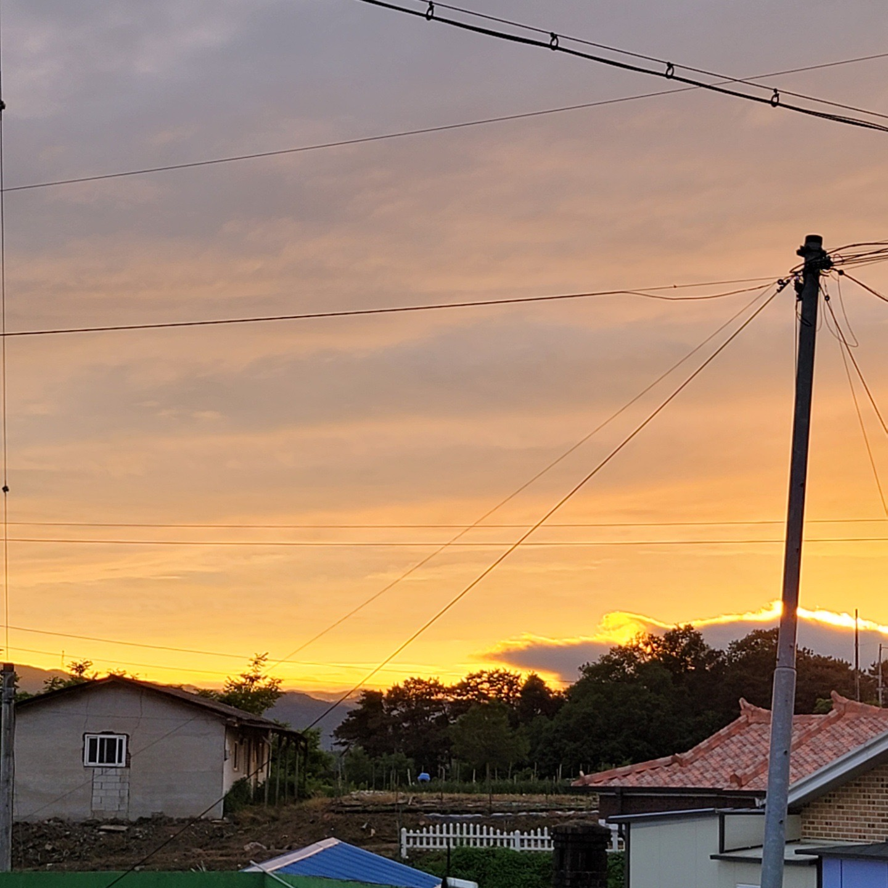
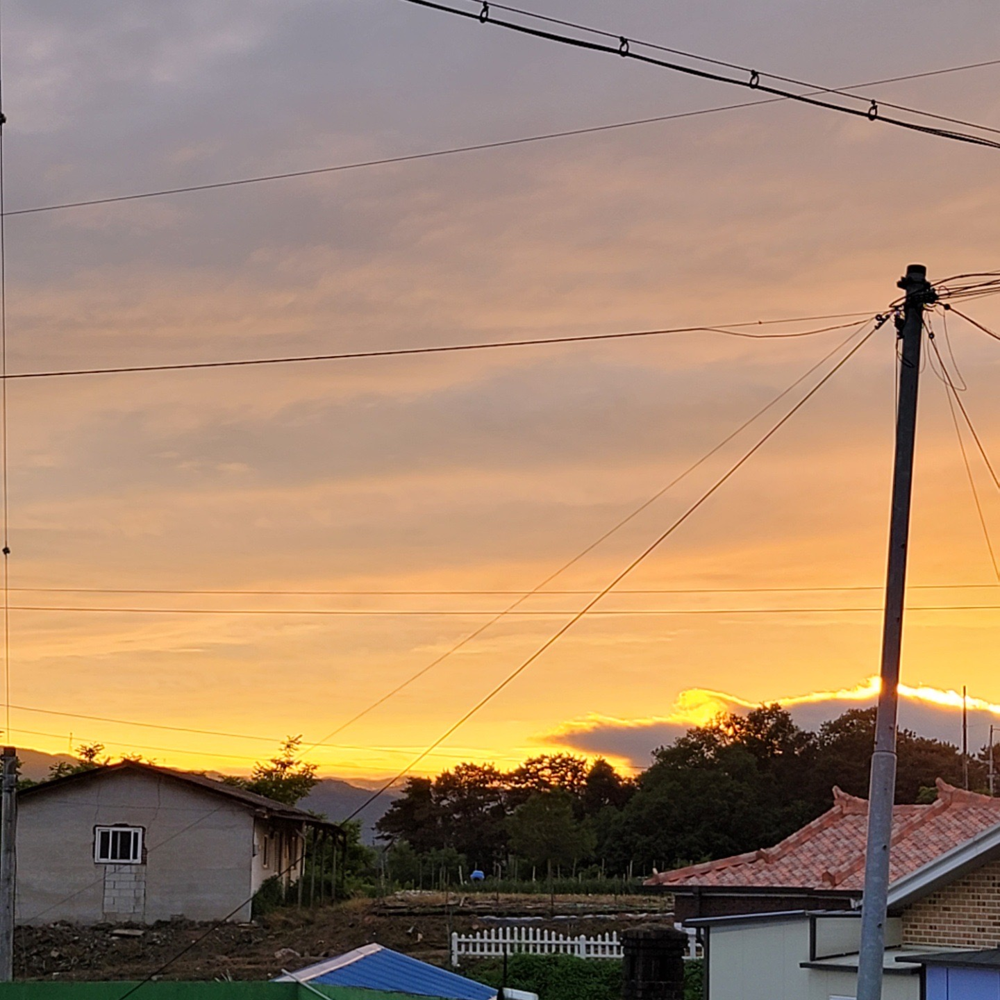
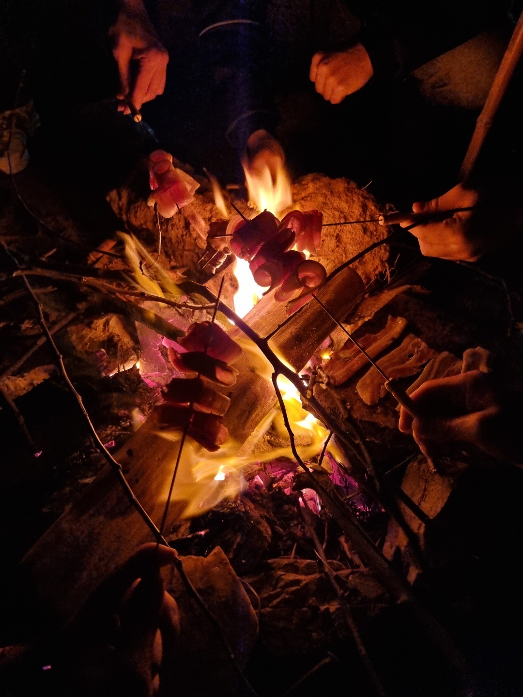

히스토리
클릭하면 해당되는 구문으로 내려갑니다.
음성여행

순기의 재입대를 위로(...)해주기 위해 재훈의 할머니댁인 음성으로 놀러가게 된다.
맛있는 음식들과 술을 먹으며 즐거운 시간을 보냈다. 코스트코와 동네 마트에서 신나게 장도 보고
순기가 집에서 연어숙성회를 해오기도 했다. 정말 맛있었던 메뉴.
그리고 기분이 좋았던 승현이 한우 20만원어치를 flex해 맛있게 구워먹었다.

이 날, 새벽 5시까지 음주를 하고 거실에 모여 누웠다가 한 시간 동안 웃느라 6시에 잠에 들었다.
아침에 일어나 집 정리를 하고, 시내에서 커피를 사와 마당에서 햇볓을 쬐며
다들 오랜만에 느껴보는 자유로움과 농촌의 여유로움을 만끽하고 왔다.
주영의 "아 좋다" 가 3분에 한 번씩 튀어나오기도 했다.

 

대부도불멍

갑작스럽게 대부도에 고기를 구워먹기 위해 재료만 들고 출발을 한다.

땔감을 주워 불을 피우고, 삼겹살과 소세지 그리고 라면을 맛있게 먹고 왔다. 안 익어도 맛있다.
물론 뒷정리는 정말 깨끗하게 하는 착한 청년들이다.
업데이트예정